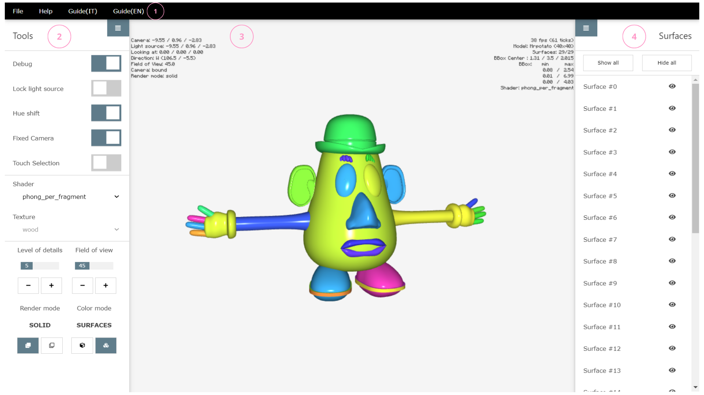

Introduzione
L'applicazione consente la visualizzazione e l'interazione con modelli in formato:
.igs (IGES).db ,.dbe (XCModel)

Nell'esempio, viene visualizzato il modello Head-Crocodile
Interfaccia grafica
L'interfaccia grafica offre numerose possibilità di interazione da parte dell'utente. Comprende:
Barra dei menù
Componente fisso dell'interfaccia, occupa la parte superiore sinistra della finestra. Offre due menù, File e Help:

File
Consente l'apertura di una finestra modale per il caricamento di modelli da visualizzare, scegliendo tra
sei modelli di default dell'applicazione- o caricando personalmente un file in formato
IGES oXCModel
Le estensioni supportate sono esclusivamente:
.igs (IGES),.db ,.dbe (XCModel).
Help
Il menù di Help apre una finestra a schermo che elenca i tasti rapidi da tastiera per eseguire le funzioni.

Barra degli strumenti
La barra degli strumenti occupa la parte sinistra della finestra. Può essere visualizzata o nascosta:
- se si sta visualizzando un modello 3D nella scena, anche usando il tasto
T da tastiera - selezionando l'icona formata da tree linee orizzontali

I cinque strumenti sono attivabili sia da tastiera che da click del mouse.
-
Debug :Camera: la posizione della camera. Può essere fissata disattivandoFixed camera , come indicato dalle notazioni a schermoCamera: freeeCamera: boundLight source: la posizione della sorgente luminosa.-
Se
Lock light source è attivato, la fonte luminosa è in una posizione fissa e indipendente da quella della camera, -
se
Lock light source non è attivato ma la camera è fissa, la luce rimane comunque nella stessa posizione - solo nel caso in cui sia la camera che la luce siano libere, le loro posizioni e direzioni coincidono
-
Se
Looking at: indica il punto di vista della camera. Quando la camera è libera (Camera: free) è fisso in0.00 / 0.00 / 0.00, mentre varia quando la camera è bloccataField of view: rappresenta l'ampiezza dell'angolo di visione della scena-
Direction: indica la direzione della camera. Al caricamento di un nuovo file, la camera mantiene la direzione precedente Render mode:solidowireframe. Può essere modificato dall'apposito comandoShader: riporta l'informazione sullo shader utilizzato. Nel caso sia applicata una texture sul modello, viene indicata nel campotexturefps: misura le prestazioni dell'applicazioneModel: il nome del modello (visualizzato solo per i file IGES o i modelli di default)Surfaces: indica il numero di superfici e quante sono visualizzate sul totaleBBoxeBBox Center: indicano le coordinate e il centro della bounding box del modello, visualizzabili selezionandoRender mode: wireframe
-
Lock light source : -
Hue shift : -
Fixed camera :LookingAt) si avrà un cambiamento nella prospettiva della scena. È possibile spostare il focus su diverse aree della scena, mantenendo sempre la stessa posizione della fotocamera. -
Touch selection :
L'applicazione offre anche la possibilità di visualizzare il modello con
cinque shader : diffue, phong_per_vertex, phong _per_fragment, blinn_phong e toonquattro texture : bricks, wood, metal e uv
Ulteriori parametri con cui si può interagire sono:
-
il
livello di dettaglio del modello, in un range da 1 a 16 -
il
field of view , per modificare l'angolo di visione della scena da un minimo di 30 gradi ad un massimo di 120
Infine, sono disponibili due diverse modalità di
SOLID , per la visualizzazione delle superficiWIREFRAME , che mostra anche la bounding box del modello
MODEL , in cui tutte le superfici hanno un unico coloreSURFACES , ogni superfice ha un colore diverso
Canvas
Il canvas 3D consente la visualizzazione dellla scena e occupa l'intera finestra, ridimensionandosi dinamicamente in base alle dimensioni dello schermo. Può essere navigato
-
da
tastiera (con i tasti rapidi riportati nel menù Help) -
utilizzando il
mouse : la rotella del mouse consente di avvicinare o allontanare la camera (ingrandendo o rimpicciolendo la scena) e, tenendola premuta, è possibile cambiare il punto di vista muovendo il mouse -
utlizzando dispositivi
touch
Lista delle superfici
La lista delle superfici che costituiscono la scena occupa la parte destra della finestra. Come per la barra degli strumenti, anche questa può essere visualizzata o nascosta:
- se si sta visualizzando un modello 3D nella scena, anche usando il tasto
E da tastiera - selezionando l'icona formata da tree linee orizzontali
Ogni superficie della lista può essere nascosta dalla visualizzazione tramite l'icona
 , che consente di mostrare o
nascondere la superficie. Inoltre, sono presenti due pulsanti:
, che consente di mostrare o
nascondere la superficie. Inoltre, sono presenti due pulsanti:
-
Show others -
Hide others